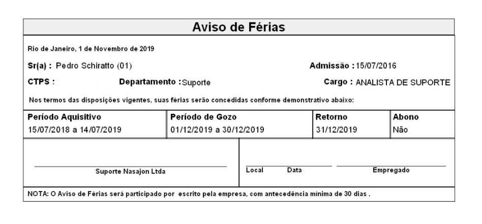
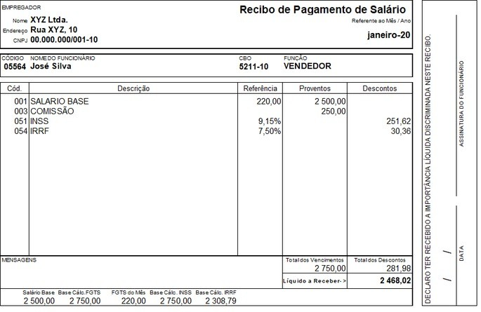

Apostila
- Nessa aula não será utilizada a apostila.
0:00 - 0:20 | Aviso de Férias
- O que é o Aviso de Férias?
- O Aviso de Férias é um documento utilizado pelo empregador para comunicar ao empregado a
concessão de suas férias, com antecedência mínima de 30 dias, conforme a legislação trabalhista.
- Esse aviso deve incluir informações sobre o período de férias, incluindo a data de início e
término, além do valor a ser pago ao empregado durante o período de descanso.
- Importância do Aviso de Férias:
- Este documento é importante para garantir que o empregado receba o pagamento das férias
corretamente, bem como para que o empregador cumpra a obrigação de respeitar a legislação
trabalhista.

0:20 - 0:45 | Demissão
- Demissão por Justa Causa:
- A demissão por justa causa ocorre quando o empregado comete uma infração grave, como desídia,
indisciplina ou embriaguez habitual.
- Neste caso, o empregado perde alguns direitos trabalhistas, como o aviso prévio e a multa do
FGTS.
- Demissão Sem Justa Causa:
- Quando o empregador decide desligar o empregado sem uma justificativa legal, este tem direito a
receber todas as verbas rescisórias, como aviso prévio, férias proporcionais e 13º salário.
- Documentos Necessários para Demissão:
- A rescisão do contrato de trabalho é formalizada por meio de documentos como o Termo de Rescisão
de Contrato de Trabalho (TRCT), que deve ser preenchido por ambas as partes.

0:45 - 1:00 | Advertência
- O que é a Advertência?
- A advertência é uma medida disciplinar aplicada pelo empregador ao empregado que descumpre
normas de conduta ou regimento interno da empresa.
- Ela pode ser verbal ou escrita e serve como um alerta para o empregado, evitando a aplicação de
penalidades mais graves, como a demissão por justa causa.
- Documentação da Advertência:
- A advertência deve ser registrada por escrito e assinada pelo empregado, para garantir que ele
foi formalmente informado sobre a infração cometida e a medida aplicada.
1:00 - 1:20 | Contrato de Experiência
- O que é o Contrato de Experiência?
- O contrato de experiência é um tipo de contrato por prazo determinado, com duração máxima de 90
dias, onde o empregador avalia a capacidade e o desempenho do empregado para decidir se o
manterá no quadro da empresa.
- Este contrato deve ser formalizado por escrito e deve ser assinado tanto pelo empregado quanto
pelo empregador.
- Importância do Contrato de Experiência:
- O contrato de experiência permite ao empregador verificar a adaptação do empregado à função e à
empresa, enquanto o empregado também tem a oportunidade de avaliar as condições de trabalho e a
empresa.
1:20 - 1:40 | Vale Transporte (VT) e Salário Família
- Vale Transporte (VT):
- O vale transporte é um benefício concedido ao empregado para cobrir os custos de deslocamento
entre sua residência e o trabalho. Ele é obrigatório quando o empregado utiliza transporte
público para se deslocar.
- O valor do benefício pode ser descontado do salário do empregado, com o limite de 6% da sua
remuneração.
- Salário Família:
- O salário-família é um benefício pago aos trabalhadores com filhos menores de 14 anos ou
inválidos, e é concedido pelo INSS para complementar a renda familiar.
- Este benefício é pago junto à folha de pagamento, e o valor depende do número de filhos e da
renda do trabalhador.
1:40 - 2:00 | Holerite e Folha de Ponto
- O que é o Holerite?
- O holerite, também conhecido como contracheque, é o documento que detalha os pagamentos feitos
ao empregado, incluindo o salário bruto, descontos, benefícios, horas extras e outros itens
relacionados à remuneração.
- Este documento deve ser entregue mensalmente ao empregado e é utilizado tanto para controle
interno da empresa quanto para que o trabalhador verifique se todos os direitos estão sendo
pagos corretamente.
- O que é a Folha de Ponto?
- A folha de ponto é o registro das horas trabalhadas pelo empregado, usado para controle de
jornada, apuração de horas extras e cálculo de salários.
- Este documento deve ser preenchido corretamente e, dependendo da empresa, pode ser em formato
manual ou digital. O objetivo é garantir que o empregador pague corretamente pelas horas
trabalhadas.
